图文实录 · 小红书 · 双胞胎果果园园
摄影审美上不去❓这15部电影一定要看❗❗
审美上不去，这组图给出的做法是看 15 部电影的完成画面，每部只留一句可模仿的视觉特征。封面印着「15部审美电影推荐」。第 2 页到第 16 页各印一个片名，合计 15 部，与封面片数一致。图上没有光圈、快门或白平衡。
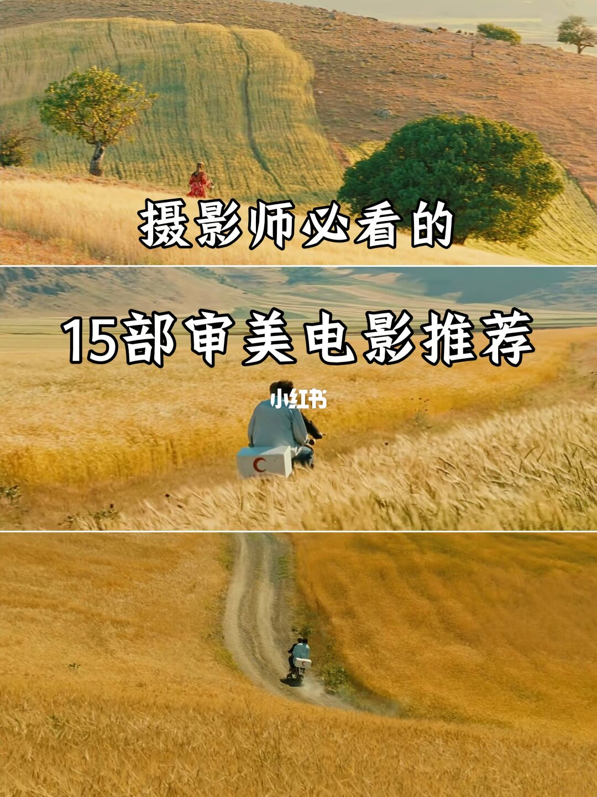
封面宣布 15 部，画面本身没有片名
上格是金黄与绿色相间的坡地，一个穿红裙的人从背面走向坡上，坡上有树。中格是麦田里两个人骑着摩托离开，车后白盒子上有红色月牙标志，居中印着小红书标志。下格是高角度的同一条土路，摩托在金黄田野里驶远，这格没有字。
封面大字两行：摄影师必看的；15部审美电影推荐。笔记标题是问句「摄影审美上不去❓这15部电影一定要看❗❗」，和封面措辞不同，片数都是 15。三格都没有片名，无法把它们指认到后面任何一部。后文以第 2–16 页印出的片名为准。
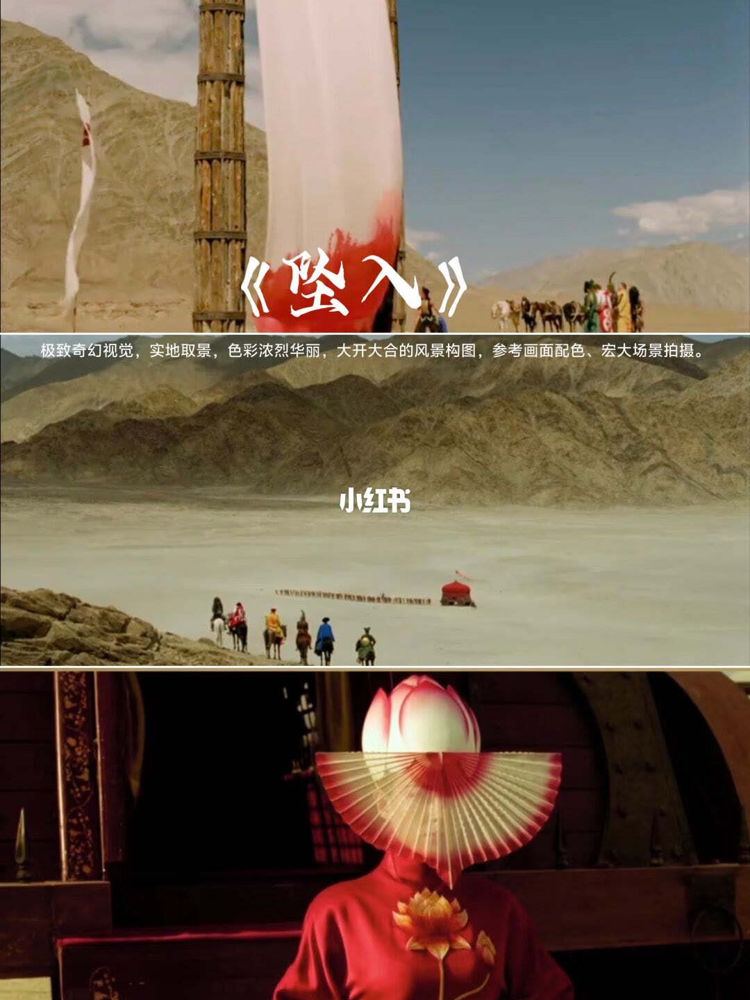
《坠入》：浓烈色和大风景
片名印在上格：《坠入》。说明全文：极致奇幻视觉，实地取景，色彩浓烈华丽，大开大合的风景构图，参考画面配色、宏大场景拍摄。
上格是旱地山前一根木杆，白布下摆染红，远处有骑马的人。中格是开阔荒地，一行骑手和一小块红色物体，远山光秃。下格是室内近景，红衣配白红相间的大头饰。图上没有导演名。可参考的是配色和把人放进大场景，头饰和服装是置景的一部分。
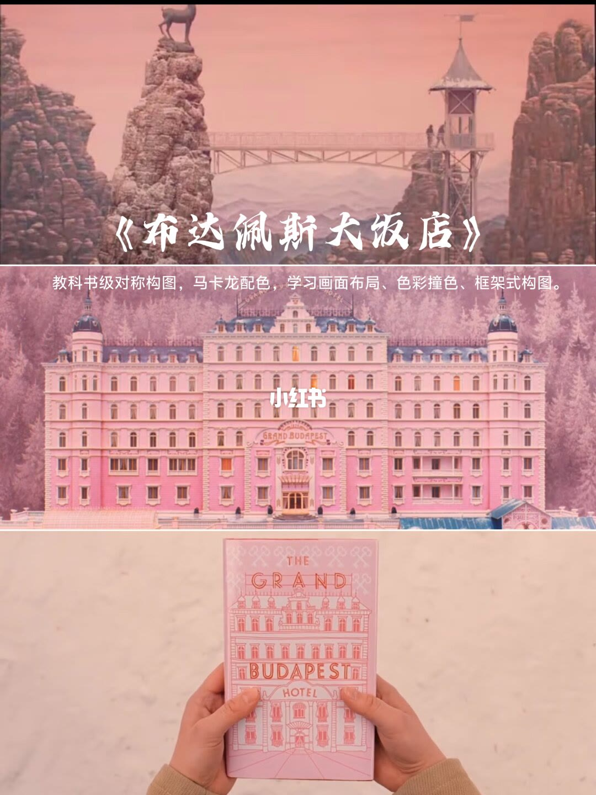
《布达佩斯大饭店》：对称和马卡龙色
片名：《布达佩斯大饭店》。说明：教科书级对称构图，马卡龙配色，学习画面布局、色彩撞色，框架式构图。
上格是粉色岩石、一座羊形雕塑和一座细高的瞭望塔，中间有窄桥。中格是左右对称的粉色建筑，两端有蓝顶，入口上方能读到 GRAND BUDAPEST。下格是一双手拿着做成酒店立面的粉色长方物，上面能读到 THE GRAND BUDAPEST HOTEL。其余碎英文无法确认。图上没有导演名。这一页要学的是布局、撞色和框架，粉紫是这一套画面的颜色。
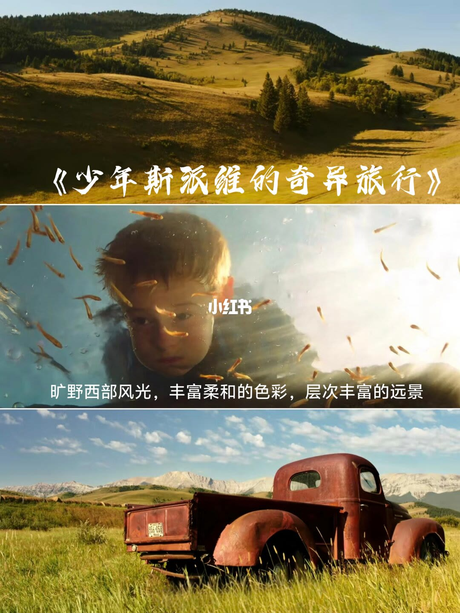
《少年斯派维的奇异旅行》：柔和的远景层次
片名：《少年斯派维的奇异旅行》。说明印在中格底部，没有句号：旷野西部风光，丰富柔和的色彩，层次丰富的远景。
上格是阳光下的缓坡，黄绿草地和疏树。中格是一个孩子隔着透明面看一群细长的橙黄色鱼，右侧有光晕。下格是草地上一辆锈红旧货车，后面是绿坡和远处雪山。图上没有导演名。和《坠入》相比，这一页写的是柔和，是远景的层次。
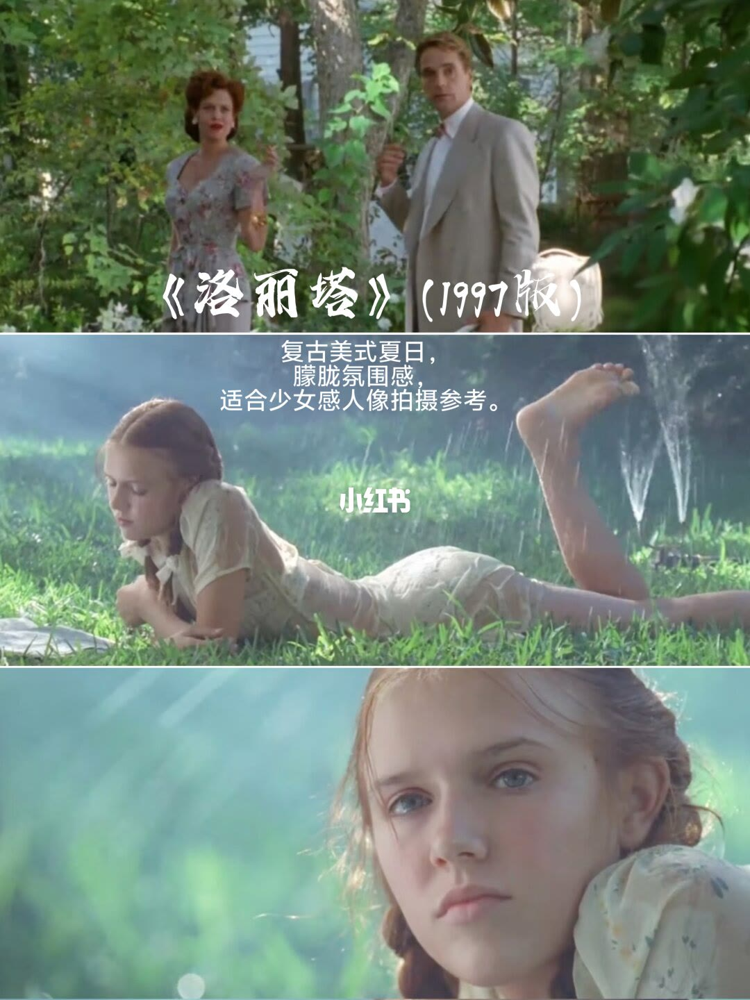
《洛丽塔》（1997版）：朦胧的夏日
片名：《洛丽塔》（1997版）。说明分三行：复古美式夏日，朦胧氛围感，适合少女感人像拍摄参考。
上格是花园里两个人对看，一人浅色西装，一人碎花裙。中格是草坪上的洒水器，一个穿白裙的人躺在水雾里，画面偏亮、偏糊。下格是同一张脸的近景，背景是虚化的绿色。图上没有导演名。版本写死在 1997。这一页给出的拍摄参考是朦胧日光和浅景深，没有写拍摄对象的年龄或距离。
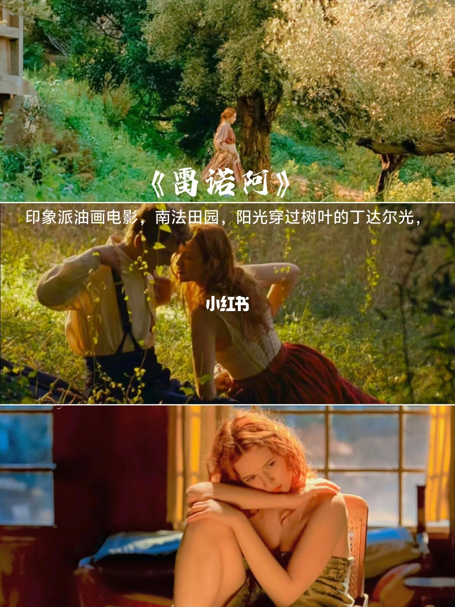
《雷诺阿》：树叶缝里的光
片名：《雷诺阿》。说明到逗号为止：印象派油画电影，南法田园，阳光穿过树叶的丁达尔光，本页没有下一句。
上格是穿暗红长裙的人穿过晒着太阳的绿地。中格是草地上并坐的两个人，光斑打在身上。下格是窗边的红发近景，暖光从身后过来。图上没有导演名。能拿走的是「阳光穿过树叶」这一种光。逗号后面写了什么，图上没有，无法确认。
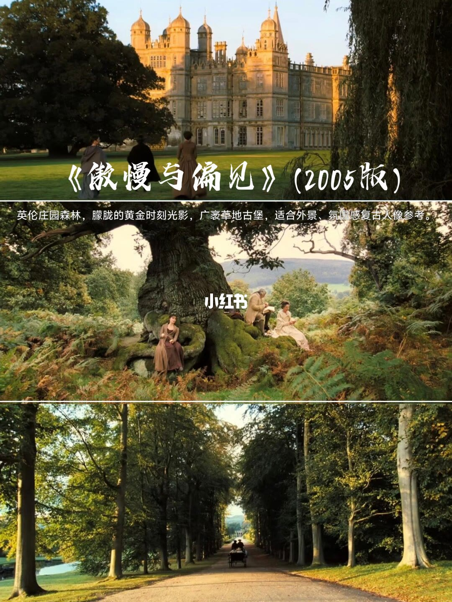
《傲慢与偏见》（2005版）：黄金时刻的庄园外景
片名：《傲慢与偏见》（2005版）。说明：英伦庄园森林，朦胧的黄金时刻光影，广袤草地古堡，适合外景、氛围感复古人像参考。
上格是大草坪尽头的多层石砌宅邸，三个深色衣服的人走向房子，影子拉得很长。中格是一棵粗树，两个人坐在树根边，人相对树很小。下格是两侧大树夹出的土路，远处有一辆马车。图上没有导演名。版本写死在 2005。这一页把人和建筑、大树、林荫道放在同一套暖而朦胧的光里。
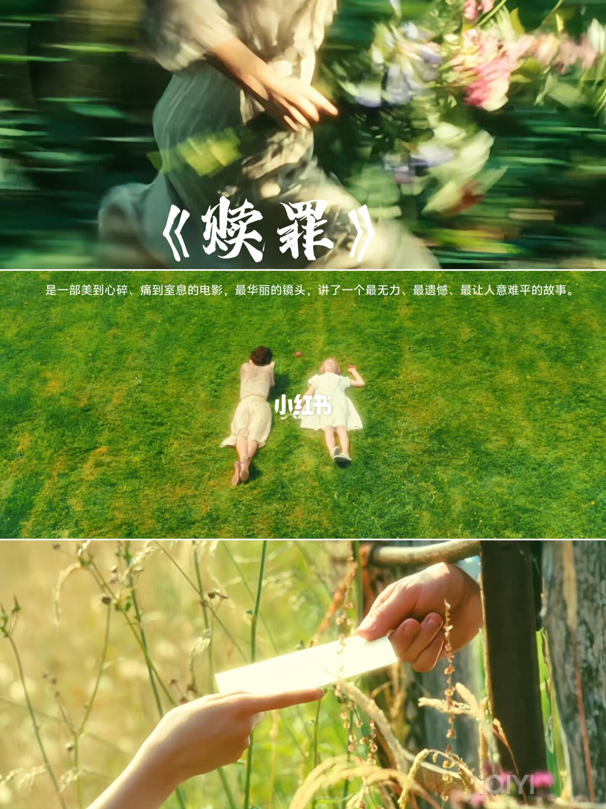
《赎罪》：华丽镜头，句子停在故事
片名：《赎罪》。说明：是一部美到心碎、痛到窒息的电影，最华丽的镜头，讲了一个最无力、最遗憾、最让人意难平的故事。
上格是浅色衣服的人在花草里跑，动态模糊。中格是俯拍，两个人穿浅色衣服躺在整齐的绿草坪上。下格是篱笆边两只手交接一张白色小纸片，逆光穿过草。右下角有一个小标志，字样无法确认。图上没有导演名，也没有构图、配色或光线的学习句。和其他页的技法说明放在一起时，这一页支撑的是「镜头华丽、故事遗憾」，支撑不了具体怎么拍。
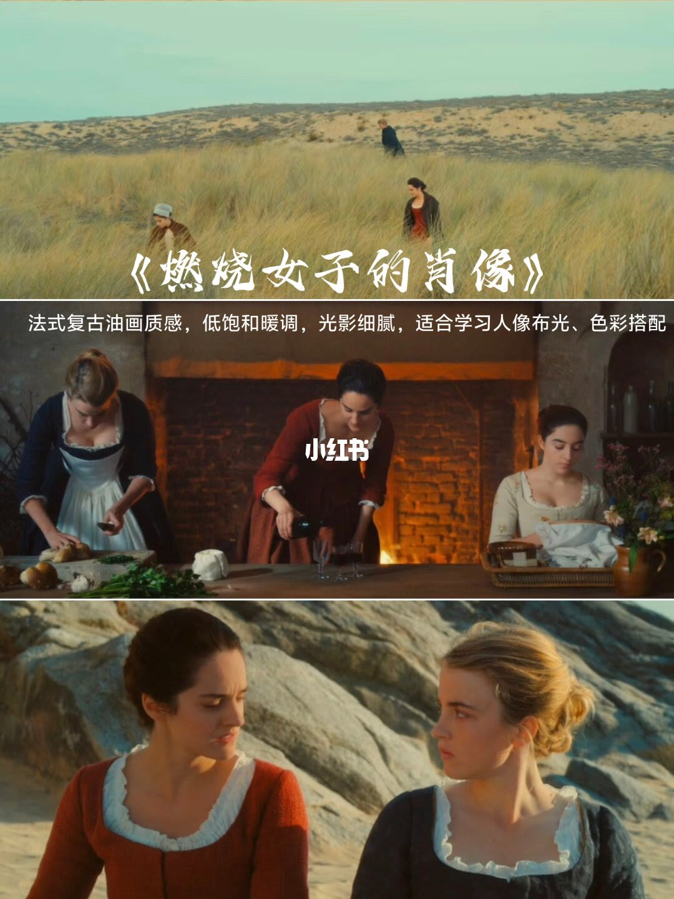
《燃烧女子的肖像》：低饱和的暖调人像
片名：《燃烧女子的肖像》。说明：法式复古油画质感，低饱和暖调，光影细腻，适合学习人像布光、色彩搭配。句末没有句号。
上格是海边草地，三个穿古装的人，一个跪着，一个站着，一个在更远处。中格是暗室内，暖光照在桌上，穿红衣的人在倒酒，另外两个人在旁边。下格是岩石前两个人对看，一个红衣，一个深色衣服，光偏晚。图上没有导演名。和《雷诺阿》都写了油画，这一页写的是低饱和暖调和人像布光，那一页写的是树叶间的直射光。
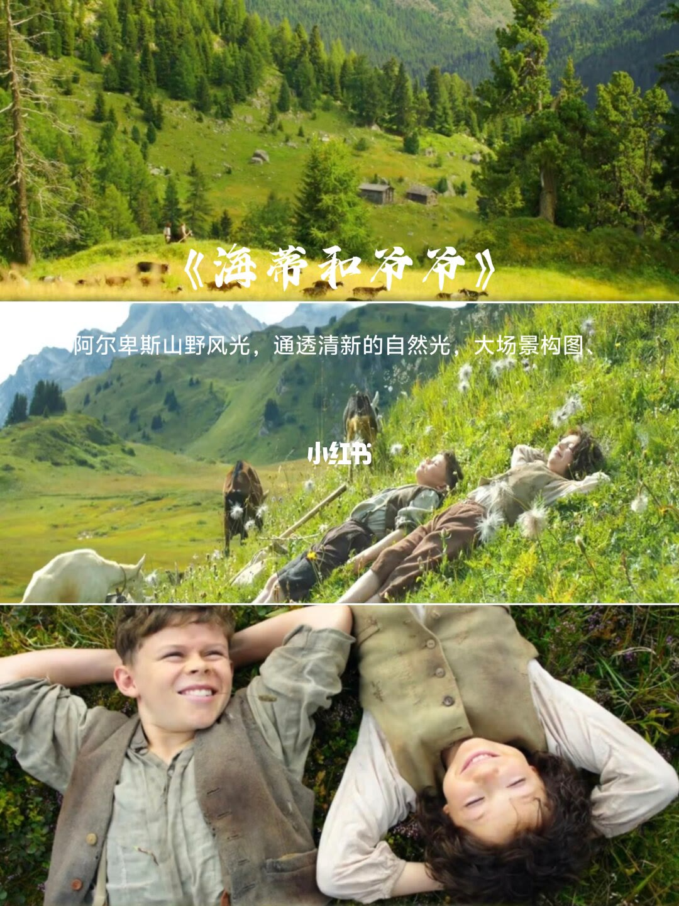
《海蒂和爷爷》：通透的大场景
片名：《海蒂和爷爷》。说明：阿尔卑斯山野风光，通透清新的自然光，大场景构图、顿号后面本页没有续写。
上格是陡绿的山坡、几间木屋和小的人畜。中格是两个孩子躺在花草地里，旁边有羊，背后是山。下格是这两个孩子的近景，一个抬头笑，一个闭眼。图上没有导演名。能确认的是山野、通透自然光、大场景。顿号暗示后面还有一项，图上没印，无法确认。
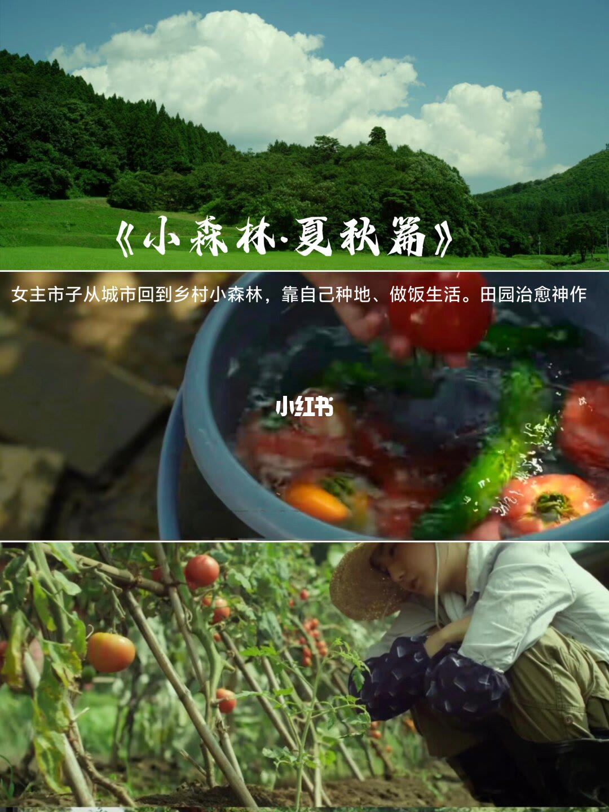
《小森林·夏秋篇》：田里的事，评价是治愈
片名：《小森林·夏秋篇》。说明：女主市子从城市回到乡村小森林，靠自己种地、做饭生活。田园治愈神作。
上格是绿坡、树林和白云。中格是一只手把红番茄和黄瓜按进浅蓝水桶。下格是戴草帽、穿深色袖套的人蹲在番茄秧边。图上没有导演名。片名单写夏秋篇。这一页告诉你看的是种地和做饭的日常，并给了「田园治愈神作」这句评价，没有写光比、色温或构图步骤。
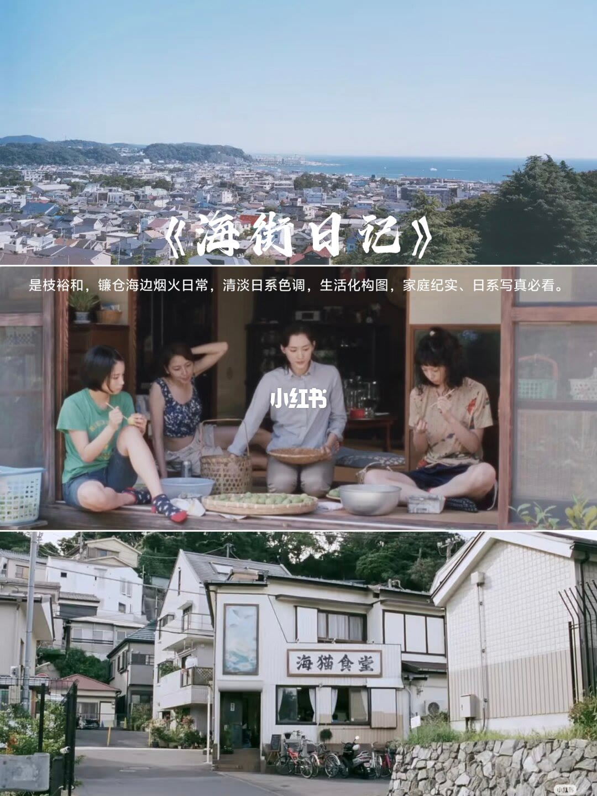
《海街日记》：清淡的生活构图
片名：《海街日记》。说明：是枝裕和，镰仓海边烟火日常，清淡日系色调，生活化构图，家庭纪实、日系写真必看。
上格是海边城镇，房子沿坡排开，前面有绿树。中格是传统房子的廊下，四个人围着筐处理青色梅子。下格是街边一栋两层白房子，门前停着自行车，招牌能读到「海猫食堂」。全组 16 页里，导演名第一次出现在这一页，印的是是枝裕和。可模仿的是清淡颜色，以及人正在做事的构图。
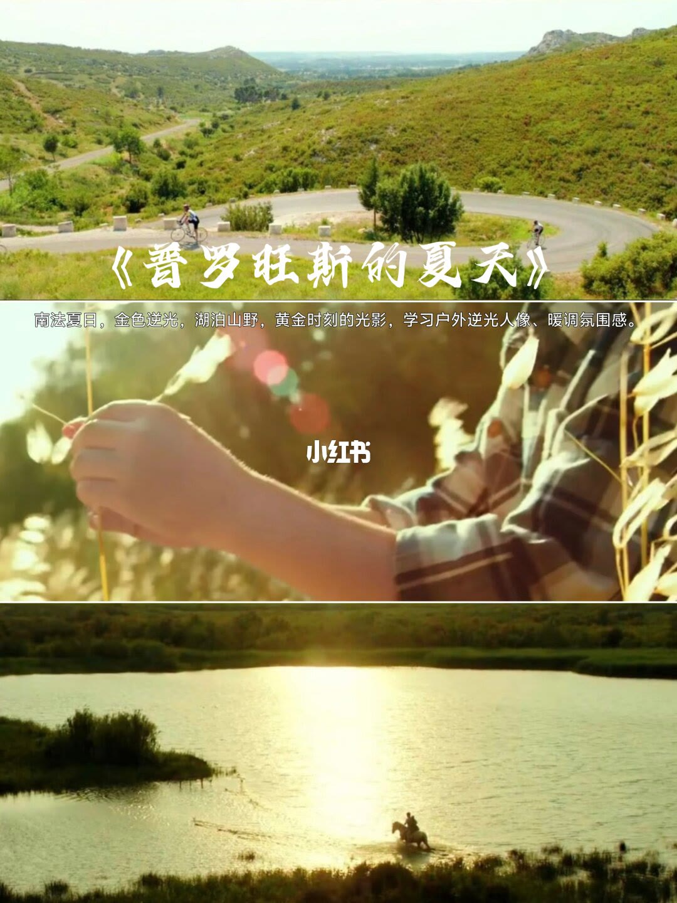
《普罗旺斯的夏天》：黄金时刻的逆光
片名：《普罗旺斯的夏天》。说明：南法夏日，金色逆光，湖泊山野，黄金时刻的光影，学习户外逆光人像、暖调氛围感。
上格是弯过绿坡的公路，路上有两辆自行车。中格是格子衬衫的人手里捏着干草，太阳在镜头方向，出现一串圆形光斑。下格是金色的湖面，一个人骑马走在浅水和草岸之间，远处山是剪影。图上没有导演名。这一页把逆光和暖调绑在一起，学习项写的是户外逆光人像。
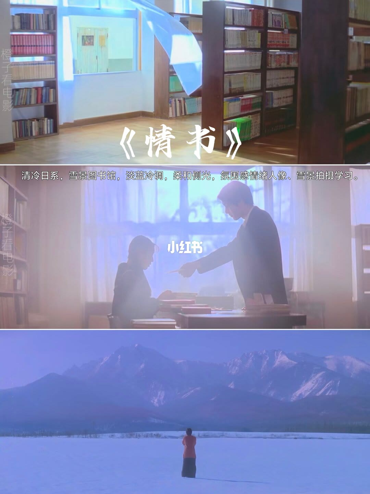
《情书》：淡蓝冷调和侧光
片名：《情书》。说明：清冷日系，雪景图书馆，淡蓝冷调，柔和侧光，氛围感情绪人像、雪景拍摄学习。
上格是图书馆，木书架夹着一扇窗，白窗帘被风吹起来。中格是同一空间的逆光剪影，站着的人把东西递给坐在桌边的人，雾偏淡蓝。下格是雪原中央一个背对镜头的人，深色外套，远处是雪山。三格左侧都有竖排水印「橙子看电影」。笔记作者以页面信息为准，是双胞胎果果园园。这一页的颜色指令是淡蓝冷调，光是柔和侧光，场景写了雪和图书馆。
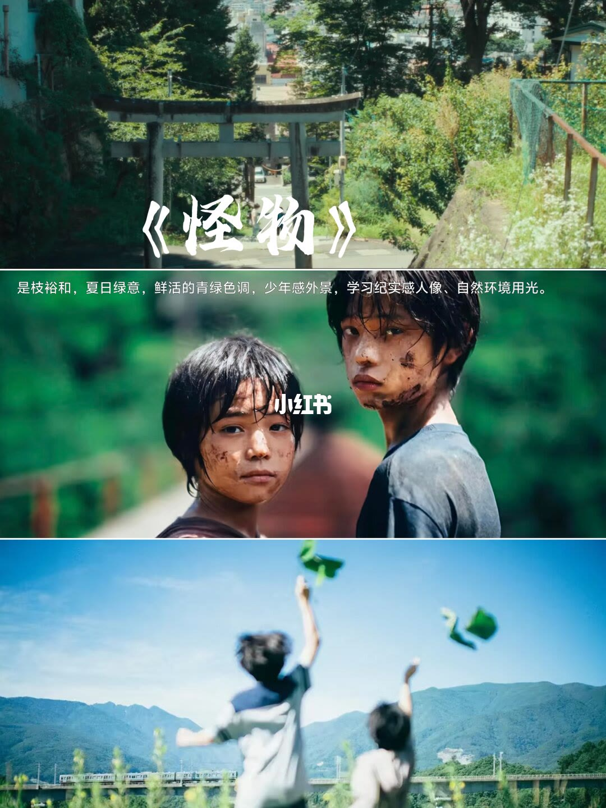
《怪物》：夏天的青绿和纪实人像
片名：《怪物》。说明：是枝裕和，夏日绿意，鲜活的青绿色调，少年感外景，学习纪实感人像、自然环境用光。
上格是坡顶的石鸟居，下面是绿坡和房子。中格是两个孩子的近景，脸上和衣服上有泥，背景是虚化的绿。下格是两个孩子在草地里跑向远山，手里举着绿色的东西，中景有一座桥和列车。导演名与第 12 页相同，都是是枝裕和。和第 12 页的清淡海边日常分开：这一页要的是更鲜的青绿，以及自然环境里的纪实人像。
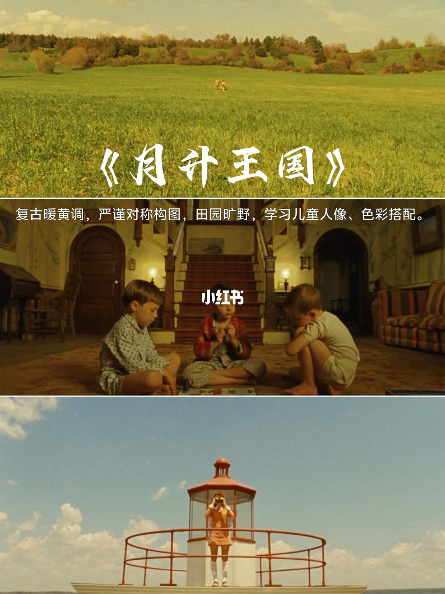
《月升王国》：暖黄里的对称
片名：《月升王国》。说明：复古暖黄调，严谨对称构图，田园旷野，学习儿童人像、色彩搭配。
上格是黄绿色的空地，两个人很小，几乎在正中。中格是室内，楼梯在正中，两侧拱门对称，三个孩子坐在地毯上。下格是灯塔阳台正中一个穿粉裙、白袜的孩子，举着望远镜，背后是蓝天。图上没有导演名。和第 3 页都写对称，颜色不同：第 3 页是马卡龙粉紫和撞色，这一页是暖黄、田园，学习项写成儿童人像和色彩搭配。
15 部都在，能照做的是光、色和构图
结论
标题问审美上不去怎么办。图上的回答是看这 15 部的完成画面，每部记一种视觉特征。第 2 页到第 16 页各一部，与封面「15部」一致，没有少片或多片。封面三格没有片名，不能算第 16 部，也不能安到任何已列片名上。
支撑页
片数和封面措辞在 1/16。浓烈大风景在 2/16，柔和远景在 4/16，通透山野在 10/16。对称分两套：马卡龙框架在 3/16，暖黄儿童在 16/16。朦胧夏日在 5/16，树叶光在 6/16，黄金时刻庄园在 7/16，低饱和暖调人像在 9/16，金色逆光在 13/16。清淡生活在 12/16，淡蓝雪景在 14/16，青绿纪实在 15/16。情绪评价在 8/16，剧情加「治愈」在 11/16。导演名只在 12/16 和 15/16，都是是枝裕和。
边界
16 页都是剧照加一句说明，没有相机参数。剧照里的服装、布景和置景，单靠后期复现不了。《雷诺阿》的说明停在逗号，《海蒂和爷爷》停在顿号，后半句无法确认。《赎罪》和《小森林·夏秋篇》没有给出可执行的布光或构图步骤。《洛丽塔》写了 1997 版和「少女感人像」，没有写拍摄对象的年龄；能从这页拿走的是朦胧夏日的光。《情书》画面上的「橙子看电影」是水印，作者仍是双胞胎果果园园。其余页面没有印导演，不能把导演名补进这组图。